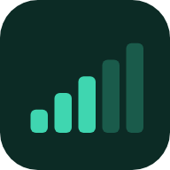

Signal Receiver
안드로이드
설치하면 홈 화면에 아이콘이 생기고, 인터넷 없이도 열립니다.
signal-receiver.apk 받기 3.7 MB서명 없는 디버그 빌드라, 설치할 때 폰 설정에서 출처를 알 수 없는 앱 설치를 한 번 허용해야 합니다. 플레이스토어 앱과는 별개로 설치됩니다.
아이폰 · 아이패드
APK 는 안드로이드 전용입니다. 대신 앱을 연 다음 홈 화면에 넣으면 주소창 없이 앱처럼 열립니다. 기능은 똑같습니다.
사파리에서 열어야 나옵니다. 다른 앱의 내장 브라우저에서는 안 보입니다.
설치 없이
받지 않고 그냥 써도 됩니다. 체크·메모·기록이 브라우저에 그대로 남습니다.
시그널 수신기 열기적은 내용은 기기 안에만 저장되고 어디로도 보내지 않습니다. 계정도 서버도 없습니다. 앱과 브라우저는 서로 다른 저장소를 쓰니 기록도 따로 쌓입니다.